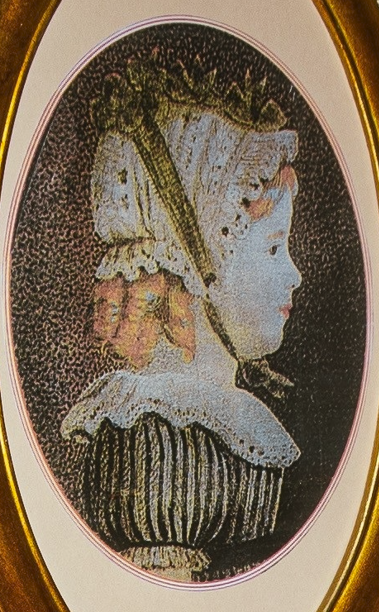
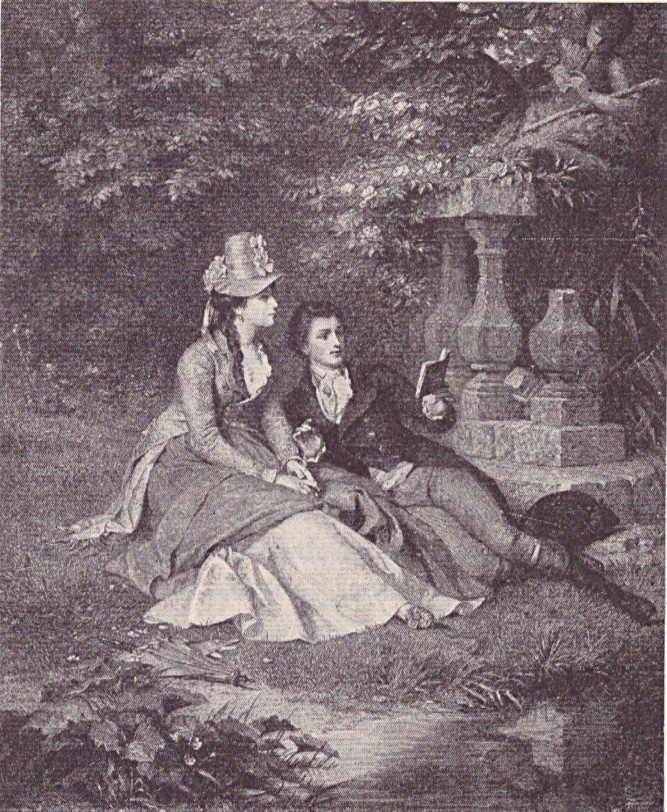
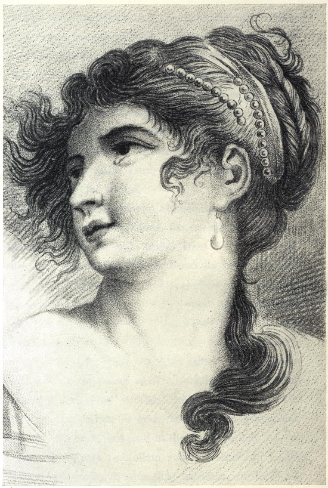
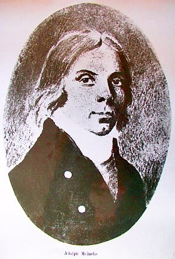
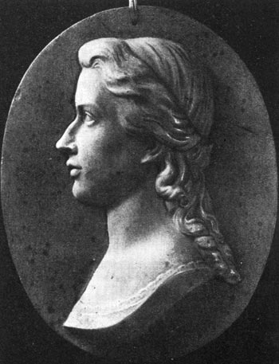
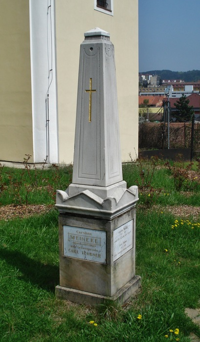

1768–1815
„Byla první ženou anglického krále. A přesto zůstala zapomenuta.“
Karolina se narodila v roce 1768 v Hannoveru do šlechtické rodiny von Linsingen. Její život se však dramaticky změnil ve chvíli, kdy se zamilovala do budoucího britského krále Viléma IV.
Jejich tajný sňatek, který koruna nikdy nepotvrdila a nakonec popřela, ji odsoudil k životu v bolesti, a nakonec i v zapomnění. Tento příběh, ať už je pravdivý či pouhou romantickou legendou, čekal téměř dvě století na to, aby byl znovu vyprávěn.

27. listopadu 1768 se v Hildesheim narodila Karolina Charlotta Dorothea von Linsingen, dcera hannoverského barona Johanna von Linsingen a Louisy von Schrader.
Po smrti matky je Karolina vychovávána pod dohledem britské královny Charlotty Mecklenburg-Strelitz. Učí se jazykům, hudbě, kresbě i literatuře. Pohybuje se mezi evropskou aristokracií a vyrůstá v mimořádně vzdělanou a citlivou ženu.

Do lázeňského města Pyrmont v Hannoveru přijíždí princ William, vévoda z Clarence. Mladý britský princ má být pod dohledem rodiny Linsingenových. Mezi Williamem a Karolinou vzniká silný vztah, který rychle přeroste v hlubokou lásku.
Karolina a William uzavírají za úsvitu tajný sňatek v lesní kapli u Welsede poblíž Pyrmontu. Obřad probíhá v přísném utajení pouze za přítomnosti několika svědků.
Když se o sňatku dozví britský dvůr, propuká skandál. Manželství prince s neurozenou nevěstou ohrožuje dynastické zájmy monarchie. Pod tlakem královny Charlotty je Karolina donucena souhlasit s rozvodem.

V lázních Driburg Karolina předčasně porodí syna. Je jí oznámeno, že dítě zemřelo. Ve skutečnosti však chlapec přežil a byl tajně odvezen do pěstounské péče. Karolina se pravdu nikdy nedozví.
Po psychickém i fyzickém zhroucení upadá Karolina do stavu připomínajícího smrt. Lékaři ji prohlásí za mrtvou. Mladý lékař Adolph Meineke však odmítne diagnózu přijmout, přesvědčí truchlící rodinu, aby pozastavila přípravy na pohřeb a po několika dnech ji skutečně přivede zpět k životu. Událost vyvolá senzaci.

Karolina si bere lékaře a chemika Adolpha Meinekeho. Nejde o romantickou lásku, ale o pokus začít znovu s mužem, k němuž pociťuje především vděk a úctu.
Novomanželé se přesouvají do Berlína, kde se jim narodí dcera Henrietta a syn Heinrich. Adolph zde zakládá vlastní podnik, který však neustále balancuje na hraně bankrotu i kvůli neutěšené mezinárodní situaci spojené s napoleonskými válkami.
Ve výroční den jejího předčasného porodu umírá i její druhý syn Heinrich. Tato rána osudu se odráží na Karolinině už tak chatrném psychickém i fyzickém zdraví.

Po osobních tragédiích a finančních problémech přijíždí rodina Meineke do jihomoravského města Blansko, kam byl Adolph přijat na lukrativní pracovní pozici v hutích Huga Františka starohraběte Salma. Karolina zde prožívá dosud nejklidnější období svého života. Na blanenském zámku vzniká její silné přátelství s Carlem Teubnerem, jemuž jako jedinému svěřuje svá tajemství.
Kvůli své podivínské povaze si Meineke v hutích během roku nadělal řadu nepřátel. Otevřený konflikt s pokladním železáren Götzem nakonec vyústí v nucený odchod z Blanska. Rodina se stěhuje do Moravské Třebové, kde se Meineke pokouší opět neúspěšně podnikat.
Princ William přicestuje na Moravu ve snaze Karolinu znovu najít. K jejich setkání však nikdy nedojde. Okolnosti jeho neúspěchu dodnes zůstávají nejasné.
Karolina se dožívá svatby své dcery Henrietty s Carlem Teubnerem i narození své první vnučky. Přes zhoršující se zdraví prožívá krátké období rodinného štěstí.

Karolina Meineke umírá na blanenském zámku, kam přijela strávit se svou dcerou Vánoce, ve věku 46 let. V úmrtním listu je jako příčina smrti uvedeno jediné slovo: „vysílení“. Pohřbena je u kostela sv. Martina v Blansku. Přesné místo jejího hrobu dnes neznáme.
Příběh jako z červené knihovny, pro zúčastněné s nádechem hořkosti. V blanenském zámku skončil ve 46 letech život ženy, která měla být anglickou královnou.
Číst článek Seznam MédiumO tom, že Viktorie nemusela být královnou, se moc nemluví. A přesto se to mohlo stát, kdyby její strýc Vilém IV. nerozvedl.
Číst článek 100+1Pouhý rok se Karolina von Linsingen mohla zvát manželkou budoucího britského panovníka. Pak zasáhly společenské konvence.
Číst článek Žena-in.czOsud šlechtičny Karoliny Meineke, která část života prožila i v Blansku, tak trochu připomíná červenou knihovnu. Tedy alespoň zpočátku. Reálný příběh však postrádá pohádkový konec.
Číst článek Tiscali.czPříběh Karoliny Meineke, která se stala první tajnou manželkou budoucího britského krále, je plný zvratů, ale také hluboké lidské odvahy.
Číst článek Blansko.czSérie 10 článků o Karolíně Meineke, které přibližují její osud, život v Blansku a neobyčejný příběh ženy, jež měla být anglickou královnou.
Číst článekNedochovaný hrob první ženy anglického krále Viléma IV. připomínala donedávna jen polozapomenutá pamětní deska odsunutá k původnímu starému plotu kostela. Nápis na ní byl obnoven a dnes je zasazena do památníku ve tvaru klasicistního pylonu z mramoru a pískovce společně s dalšími dvěma novými deskami.
Na jedné jsou základní životopisná data Karoliny a jejího zetě Carla Teubnera, na druhé český překlad veršů z Wielandova Oberona a na další straně památníku erb šlechtického rodu Linsingenů – sedm bílých čoček položených na třech modrých břevnech.
Karolina Meineke (1768–1815), rozená von Linsingen, byla hannoverská šlechtična, o níž se traduje, že se roku 1791 tajně provdala za prince Viléma, pozdějšího britského krále Viléma IV. Po nuceném rozchodu se znovu vdala za lékaře Adolpha Meinekeho a poslední léta života prožila v Blansku na jižní Moravě, kde roku 1815 zemřela.
Tajný sňatek britský dvůr nikdy nepotvrdil a později jej popřel. Příběh se opírá o dobové zápisky a část historiků jej považuje spíše za romantickou legendu než za doložený fakt. Právě tahle nejistota je jádrem jejího příběhu.
Česky se nejčastěji uvádí Karolina Meineke, plným jménem Karolina Charlotta Dorothea Meineke. Německy a anglicky bývá vedena rodným jménem Caroline von Linsingen, dále jako Karoline von Linsingen, Marianne Caroline Dorothee von Linsingen, Caroline Meineke nebo Caroline Meinecke; v českých textech se objevuje i zápis Carolina Charlotta Dorothea von Lisingen.
Syna porodila předčasně 12. listopadu 1792 v lázních Driburg a bylo jí oznámeno, že dítě zemřelo. Chlapec ale přežil a byl tajně odvezen do pěstounské péče – pravdu se Karolina nikdy nedozvěděla. Druhého syna Heinricha, narozeného později v Berlíně, ztratila v roce 1809, shodou okolností ve výroční den onoho předčasného porodu.
Na konci roku 1809, poté co její muž Adolph Meineke získal místo v hutích Huga Františka starohraběte Salma. Karolina tu prožila nejklidnější období svého života a na blanenském zámku se spřátelila s Carlem Teubnerem, jemuž jako jedinému svěřovala svá tajemství. V roce 1811 se rodina po konfliktu v hutích odstěhovala do Moravské Třebové; do Blanska se Karolina vrátila na Vánoce roku 1814 a v lednu 1815 tam zemřela.
Ne. V roce 1812 přicestoval princ William na Moravu ve snaze Karolinu najít, k setkání ale nikdy nedošlo a okolnosti jeho neúspěchu zůstávají dodnes nejasné. Na britský trůn usedl jako Vilém IV. až v roce 1830, patnáct let po Karolinině smrti.
Ve Starém Blansku u kostela svatého Martina. Původní hrob se nedochoval; místo dnes připomíná památník ve tvaru klasicistního pylonu z mramoru a pískovce s obnovenou pamětní deskou, životopisnými daty a erbem rodu Linsingenů.
Byla ženou muže, který se později stal anglickým králem – královnou se ale nikdy nestala. Sňatek zůstal utajený, koruna jej popřela a Karolina dožila v zapomnění na Moravě. Odtud název muzikálu Příběh utajené královny.